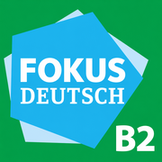

Schritt für Schritt zu sicherem Deutsch
Eigene Wörter werden erst nach deiner Bestätigung hinzugefügt. Die Übernahme eines Wortes in GitHub ändert seinen Lernstand nicht.
Jedes Wort zählt pro Tag nur einmal, über alle Übungen hinweg und auch nach einem Fehler. Ausgeblendete Wörter zählen nicht mit. Ihr Lernverlauf bleibt gespeichert.
Deutsch: erneut antippen für ein Beispiel, gedrückt halten zum Ausblenden. Ukrainisch: gedrückt halten, um die Übersetzung zu melden.